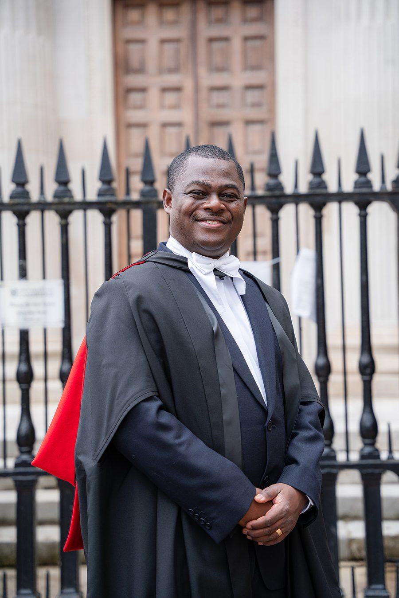
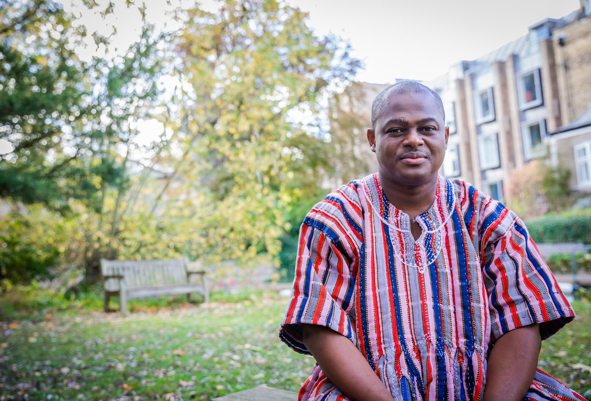

Bio
I began medical school in Kumasi at nineteen, knowing I wanted to work with children. What I didn't expect was to discover, a few years in, that child and adolescent psychiatry barely existed in Ghana at all — I could name dozens of paediatricians I knew personally, and not one child psychiatrist. That imbalance decided my path.
Today I'm one of only a handful of psychiatrists in Ghana formally trained in child and adolescent mental health, in a country of over thirty million people. I helped transform one of Ghana's first multidisciplinary CAMH clinics from that gap. It now draws referrals from 11 of Ghana's 16 regions, as well as from neighbouring West African countries. Working with that population, often without valid tools to properly assess what I was seeing, was a frustration that pulled me first into psychometrics, then into the genetics and epigenetics of psychiatric illness in African-ancestry populations.
My Cambridge PhD built culturally valid tools to measure executive function in West African children. My postdoctoral Mood Fellowship at the Mayo Clinic gave me genomics, GWAS, and epigenetics skills to ask how environment gets written into biology in African-ancestry populations, working with Drs Stacey Winham, Doo-Sup Choi and Marin Veldic — alongside a parallel strand with Dr Monica Taylor-Desir exploring the Assertive Community Treatment (ACT) model for resource-poor settings and community psychiatry. I'm now working to bring these strands together — closing evidence gaps that, in many cases, currently have zero answers from this part of the world.
I'm also now back in Ghana, working to use that knowledge and exposure to build local research capacity across the African continent — through focused mentorship and advanced research training among the next generation of young scholars and thought-leaders.


Current Roles
- Senior Lecturer, Department of Behavioural Sciences, KNUST School of Medical Sciences (Nov 2024 – present)
- Lead Clinician & Specialist-in-Charge, CAMH Clinic, Dept. of Psychiatry, Komfo Anokye Teaching Hospital (KATH)
- President, Psychiatric Association of Ghana (2025 – 2027)
- Immediate Past President, African Association of Child and Adolescent Mental Health (AACAMH), affiliate of IACAPAP
- Visiting Researcher, CHARM Group, Dept. of Psychiatry, University of Cambridge (2024 – present)
- Research Collaborator, Department of Psychiatry and Psychology, Mayo Clinic, Rochester, MN, USA (2026 – present)
- Member, Psychiatric Genomics Consortium — Africa Working Group
- Postgraduate Training Coordinator, KATH Department of Psychiatry
- Secretary, WACP Faculty of Psychiatry (Ghana Chapter)
Academic Qualifications
PhD in Psychiatry, University of Cambridge (2025)
Thesis: Conceptualisation and Culturally Appropriate Assessment of Executive Function in Children in Ghana and Nigeria. Commonwealth Scholar.
Mood Fellowship, Mayo Clinic, Rochester MN (2025–2026)
Postdoctoral fellowship in Mood Disorders — clinical and research training in GWAS, Mendelian randomization, epigenetics, and pharmacogenomics in African-ancestry populations.
MSc in Child & Adolescent Mental Health, University of Ibadan (2017, with Distinction)
Overall Best Student and Best Thesis awards.
FWACP (Psych) & MGCP (Psych)
Fellow, West African College of Physicians, Faculty of Psychiatry (2019) — terminal clinical qualification as a General Adult Psychiatrist. Member, Ghana College of Physicians and Surgeons (2018).
MB.ChB & BSc. Human Biology, KNUST (2011, 2009)
Grants
GCRF QR Internal Grant (RNAG/588)
Co-awarded with Prof Tamsin Ford, this Global Challenges Research Fund award was made by Research England and administered internally by the University of Cambridge. It funded the fieldwork for my doctoral research project in Ghana and Nigeria, which I had free rein to manage in-country. The grant was successfully executed and completed by August 2021, under Research England's governance and reporting framework.
Research Interests & Contributions
- Psychiatric genetics and epigenetics, particularly in African-ancestry populations
- Bayesian and computational methods; GWAS and Mendelian randomization
- Psychometrics and culturally valid assessment tools for LMICs
- Child and adolescent mental health in low-resource settings
- Global mental health and CAMH capacity-building
- Applied AI in mental health research
Applied AI in Mental Health Research
An emerging strand of my work applies AI approaches to systematic and scoping review methodology — including in a completed systematic review with Dr Choi, the genetic architecture of mood disorders scoping review, and the ACT model scoping review. I've since been invited to speak on applied AI in mental health research at several WACP, PAG, and Ghana College of Physicians and Surgeons (GCPS) platforms across West Africa.
Awards & Distinctions (selected)
- Commonwealth PhD Scholarship (2019)
- Wellcome Trust Early Career Award — finalist (2025)
- Lasker Foundation Essay Award (2020)
- IACAPAP Donald J. Cohen Fellowship (2016)
- Best Poster Presentation, SASOP Biological Psychiatry Congress (2017)